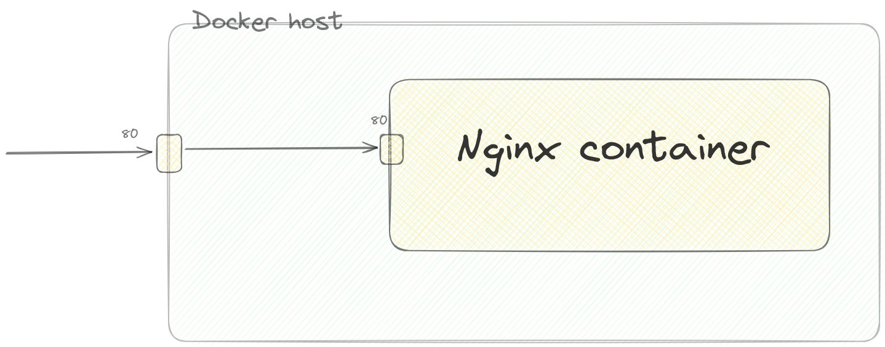

class: center, middle <!--  --> .center[ <img src="../assets/images/01-primary-blue-docker-logo.png" width=50% class="animate__animated animate__fadeIn"/> ] <h1 class="animate__animated animate__fadeIn"> Working with Docker Containers</h1> .right[ <img src="../assets/images/mk-logo.png" width=10% /> ] By - Mohit Kumar [mohitkr.com](https://mohitkr.com) --- # Docker container A Docker container is a lightweight, standalone, and executable software package that includes everything needed to run a piece of software, including the code, runtime, libraries, and system tools. --- ## Working with nginx Nginx (pronounced "engine-x") is a popular open-source web server and reverse proxy server. It's known for its high performance, stability, and scalability. Originally created by Igor Sysoev, it has become one of the most widely used web servers globally. Running your own webserver with nginx docker image ```bash docker run -d -p 80:80 --name my-nginx-server nginx:latest ```  --- # Docker containers - List Running Containers ```bash $ docker ps CONTAINER ID IMAGE COMMAND CREATED STATUS PORTS NAMES 441adc0ccd4a nginx:latest "/docker-entrypoint.…" 12 seconds ago Up 9 seconds 80/tcp admiring_lumiere ``` --- ## List all the Containers This command shows both running and stopped containers, providing additional details such as Exit Code and Status. ```bash $ docker ps -a CONTAINER ID IMAGE COMMAND CREATED STATUS PORTS NAMES 441adc0ccd4a nginx:latest "/docker-entrypoint.…" 2 minutes ago Up 2 minutes 80/tcp admiring_lumiere 517e850d76e7 open5gs-amfd "/entrypoint.sh login" 4 days ago Exited (130) 4 days ago cool_bose 41ca411370c4 open5gs-amfd "/entrypoint.sh amf" 4 days ago Exited (127) 4 days ago condescending_golick f78ab61fdfa9 e2d7b349c111 "/entrypoint.sh amf" 4 days ago Exited (127) 4 days ago keen_volhard d21893bf81d0 29bd09a14db1 "/entrypoint.sh amf" 4 days ago Exited (1) 4 days ago quizzical_northcutt deabb3baba8b 29bd09a14db1 "/entrypoint.sh login" 4 days ago Exited (0) 4 days ago distracted_neumann 7d6b54c127a6 29bd09a14db1 "/entrypoint.sh amf …" 4 days ago Exited (1) 4 days ago inspiring_mccarthy ab1ae430fd5f 29bd09a14db1 "/entrypoint.sh amf …" 4 days ago Exited (1) 4 days ago naughty_franklin ``` --- # Inspect Container This JSON output provides detailed information about the specified Docker container, covering various aspects such as configuration, network settings, mounts, and more. The specific details may vary based on the container's configuration and the Docker version in use. ```bash $ docker inspect 441adc0ccd4a { "Id": "441adc0ccd4a729ce6bde148664bed9675db656a1381ad806296a739b048f7f1", "Created": "2024-01-13T11:40:51.026748754Z", "Path": "/docker-entrypoint.sh", "Args": [ "nginx", "-g", "daemon off;" ], ... ``` --- # Inspect Container OOMKilled - In the context of Docker containers, if a container is OOMKilled, it indicates that the process running inside the container was terminated by the OOM killer due to memory constraints. ```bash $ docker inspect 441adc0ccd4a ... "State": { "Status": "running", "Running": true, "Paused": false, "Restarting": false, "OOMKilled": false, "Dead": false, "Pid": 18125, "ExitCode": 0, "Error": "", "StartedAt": "2024-01-13T11:40:53.737015925Z", "FinishedAt": "0001-01-01T00:00:00Z" }, ``` --- # Inspect Container ```bash $ docker inspect 441adc0ccd4a ... "Image": "sha256:a8758716bb6aa4d90071160d27028fe4eaee7ce8166221a97d30440c8eac2be6", "ResolvConfPath": "/var/lib/docker/containers/441adc0ccd4a729ce6bde148664bed9675db656a1381ad806296a739b048f7f1/resolv.conf", "HostnamePath": "/var/lib/docker/containers/441adc0ccd4a729ce6bde148664bed9675db656a1381ad806296a739b048f7f1/hostname", "HostsPath": "/var/lib/docker/containers/441adc0ccd4a729ce6bde148664bed9675db656a1381ad806296a739b048f7f1/hosts", "LogPath": "/var/lib/docker/containers/441adc0ccd4a729ce6bde148664bed9675db656a1381ad806296a739b048f7f1/441adc0ccd4a729ce6bde148664bed9675db656a1381ad806296a739b048f7f1-json.log", "Name": "/admiring_lumiere", "RestartCount": 0, "Driver": "overlay2", "Platform": "linux", "MountLabel": "", "ProcessLabel": "", "AppArmorProfile": "", "ExecIDs": null, ``` --- ## Checking logs This command displays the logs generated by a specific container. Useful for troubleshooting and monitoring the container's activity. ```bash $ docker logs 441adc0ccd4a /docker-entrypoint.sh: /docker-entrypoint.d/ is not empty, will attempt to perform configuration /docker-entrypoint.sh: Looking for shell scripts in /docker-entrypoint.d/ /docker-entrypoint.sh: Launching /docker-entrypoint.d/10-listen-on-ipv6-by-default.sh 10-listen-on-ipv6-by-default.sh: info: Getting the checksum of /etc/nginx/conf.d/default.conf 10-listen-on-ipv6-by-default.sh: info: Enabled listen on IPv6 in /etc/nginx/conf.d/default.conf /docker-entrypoint.sh: Sourcing /docker-entrypoint.d/15-local-resolvers.envsh /docker-entrypoint.sh: Launching /docker-entrypoint.d/20-envsubst-on-templates.sh /docker-entrypoint.sh: Launching /docker-entrypoint.d/30-tune-worker-processes.sh /docker-entrypoint.sh: Configuration complete; ready for start up 2024/01/13 11:40:53 [notice] 1#1: using the "epoll" event method 2024/01/13 11:40:53 [notice] 1#1: nginx/1.25.3 2024/01/13 11:40:53 [notice] 1#1: built by gcc 12.2.0 (Debian 12.2.0-14) 2024/01/13 11:40:53 [notice] 1#1: OS: Linux 5.15.133.1-microsoft-standard-WSL2 2024/01/13 11:40:53 [notice] 1#1: getrlimit(RLIMIT_NOFILE): 1048576:1048576 2024/01/13 11:40:53 [notice] 1#1: start worker processes 2024/01/13 11:40:53 [notice] 1#1: start worker process 29 2024/01/13 11:40:53 [notice] 1#1: start worker process 30 2024/01/13 11:40:53 [notice] 1#1: start worker process 31 2024/01/13 11:40:53 [notice] 1#1: start worker process 32 2024/01/13 11:40:53 [notice] 1#1: start worker process 33 2024/01/13 11:40:53 [notice] 1#1: start worker process 34 2024/01/13 11:40:53 [notice] 1#1: start worker process 35 2024/01/13 11:40:53 [notice] 1#1: start worker process 36 2024/01/13 11:40:53 [notice] 1#1: start worker process 37 2024/01/13 11:40:53 [notice] 1#1: start worker process 38 2024/01/13 11:40:53 [notice] 1#1: start worker process 39 2024/01/13 11:40:53 [notice] 1#1: start worker process 40 ``` --- ## Docker top Shows the top processes running in a container, similar to the top command in Unix-like operating systems. ```bash $ docker top 441adc0ccd4a UID PID PPID C STIME TTY TIME CMD root 18125 18104 0 11:40 ? 00:00:00 nginx: master process nginx -g daemon off; _rpc 18167 18125 0 11:40 ? 00:00:00 nginx: worker process _rpc 18168 18125 0 11:40 ? 00:00:00 nginx: worker process _rpc 18169 18125 0 11:40 ? 00:00:00 nginx: worker process _rpc 18170 18125 0 11:40 ? 00:00:00 nginx: worker process _rpc 18171 18125 0 11:40 ? 00:00:00 nginx: worker process _rpc 18172 18125 0 11:40 ? 00:00:00 nginx: worker process _rpc 18173 18125 0 11:40 ? 00:00:00 nginx: worker process _rpc 18174 18125 0 11:40 ? 00:00:00 nginx: worker process _rpc 18175 18125 0 11:40 ? 00:00:00 nginx: worker process _rpc 18176 18125 0 11:40 ? 00:00:00 nginx: worker process _rpc 18177 18125 0 11:40 ? 00:00:00 nginx: worker process _rpc 18178 18125 0 11:40 ? 00:00:00 nginx: worker process ``` --- ## Docker stats This command provides real-time streaming statistics for all running containers, including CPU usage, memory usage, network I/O, and block I/O. ```bash $ docker stats CONTAINER ID NAME CPU % MEM USAGE / LIMIT MEM % NET I/O BLOCK I/O PIDS 441adc0ccd4a admiring_lumiere 0.00% 9.969MiB / 15.44GiB 0.06% 1.37kB / 0B 0B / 0B 13 CONTAINER ID NAME CPU % MEM USAGE / LIMIT MEM % NET I/O BLOCK I/O PIDS 441adc0ccd4a admiring_lumiere 0.00% 9.969MiB / 15.44GiB 0.06% 1.37kB / 0B 0B / 0B 13 CONTAINER ID NAME CPU % MEM USAGE / LIMIT MEM % NET I/O BLOCK I/O PIDS 441adc0ccd4a admiring_lumiere 0.00% 9.969MiB / 15.44GiB 0.06% 1.37kB / 0B 0B / 0B 13 CONTAINER ID NAME CPU % MEM USAGE / LIMIT MEM % NET I/O BLOCK I/O PIDS 441adc0ccd4a admiring_lumiere 0.00% 9.969MiB / 15.44GiB 0.06% 1.37kB / 0B 0B / 0B 13 CONTAINER ID NAME CPU % MEM USAGE / LIMIT MEM % NET I/O BLOCK I/O PIDS 441adc0ccd4a admiring_lumiere 0.00% 9.969MiB / 15.44GiB 0.06% 1.37kB / 0B 0B / 0B 13 CONTAINER ID NAME CPU % MEM USAGE / LIMIT MEM % NET I/O BLOCK I/O PIDS 441adc0ccd4a admiring_lumiere 0.00% 9.969MiB / 15.44GiB 0.06% 1.37kB / 0B 0B / 0B 13 CONTAINER ID NAME CPU % MEM USAGE / LIMIT MEM % NET I/O BLOCK I/O PIDS 441adc0ccd4a admiring_lumiere 0.00% 9.969MiB / 15.44GiB 0.06% 1.37kB / 0B 0B / 0B 13 CONTAINER ID NAME CPU % MEM USAGE / LIMIT MEM % NET I/O BLOCK I/O PIDS 441adc0ccd4a admiring_lumiere 0.00% 9.969MiB / 15.44GiB 0.06% 1.37kB / 0B 0B / 0B 13 CONTAINER ID ``` --- ## Advance operations 1. Run a Container in the Background (Detached Mode): `docker run -d IMAGE[:TAG]` 2. Specify a Custom Name for the Container: `docker run --name CONTAINER_NAME IMAGE[:TAG]` 3. Specify a port mapping: `docker run -p HOST_PORT:CONTAINER_PORT IMAGE[:TAG]` 4. Mount a folder: `docker run -v HOST_PATH:CONTAINER_PATH IMAGE[:TAG]` 5. Set an environment variable: `docker run -e KEY=VALUE IMAGE[:TAG]` 6. Allocate a `tty` and keep STD-IN open: `docker run -it IMAGE[:TAG] /bin/bash` 7. Limit containe resources: `docker run --cpus=2 --memory=512m IMAGE[:TAG]` 8. Run command inside existing container: `docker exec CONTAINER_ID or CONTAINER_NAME COMMAND [ARG...]` 9. Specify restart policy: `docker run --restart=always IMAGE[:TAG]` --- --- ---